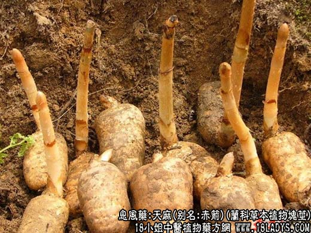

【中药概述】
天麻，别名赤箭、离母、鬼督邮、神草、独摇芝、赤箭脂、定风草、合离草、独摇、自动草、水洋芋，为兰科草本植物天麻的块茎。甘，微寒。归肝、心包经。
1．熄风止痉：用于肝风内动，惊痫抽搐，高热动风、惊痫抽搐、角弓反张等症，如<钩藤饮>。
2．平降肝阳：用于肝阳上亢的眩晕、头痛，眩晕，如（普济方<天麻丸>）、<天麻钩藤饮>、<半夏白术天麻汤>。
3．用于风湿痹痛及肢体麻木、手足不遂等，如<天麻酒>。
【药效鉴别】
天麻甘平滋润，能治一切风证，且平肝力强，兼能祛风活络；而钩藤甘凉兼能清泄肝火，故多用于热盛动风证。
【药理作用】
有镇静镇痛、抗惊厥作用，能促进胆汁分泌，降低外周血管和冠脉阻力。
【化学成分】
含香夹兰醛、香夹兰醇、生物碱、甙类等。
【用量用法】
3——10g，水煎服，不宜久煎。或研末吞服。
【使用注意】
凡病人觉得津液衰少，口干舌燥，咽干作痛，大便闭涩，火炎头晕，血虚头痛及无风者，均不宜使用。不良反应见头痛，面热，昏迷，对光反应迟钝。
【注】
它本身无根，不能直接吸收土壤中的水分和矿物营养；地上部分无绿色叶片，又不能进行光合作用来制造养料。它的食物与营养来源，完全依靠它自身的一种溶菌素去溶解、吸收侵入到它体内的密环菌而生长，故又称为食菌植物。